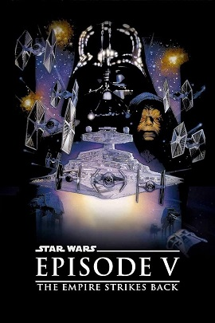

|
Star Wars Episode 5: Nach einem Angriff auf ihren geheimen Stützpunkt auf dem Eisplaneten Hoth durch die imperialen Streitkräfte, müssen sich die Rebellen erneut verstreuen. Luke Skywalker begibt sich auf die Suche nach dem weisen Jedi-Meister Yoda, um seine Ausbildung fortzusetzen, während Han Solo und Prinzessin Leia von der imperialen Flotte verfolgt werden. Die Handlung verdichtet sich in der berühmten Enthüllung der wahren Beziehung zwischen Luke und Darth Vader, was die Saga in eine neue Richtung lenkt. Der Film ist bekannt für seine emotionalen Tiefe, dramatische Kämpfe und die Erweiterung des Universums mit neuen, ikonischen Charakteren und Orten. Diese Episode gilt als einer der stärksten Filme der Reihe und hat das kulturelle Phänomen Star Wars maßgeblich geprägt. |
 |
||||
| Episode 5 - Das Imperium schlägt zurück | |||||
| Produktions Infos | |||||
| Veröffentlichungsdatum | •21. Mai 1980 (Englisch) •11. Dezember 1980 (Deutsch) |
||||
| Filmlänge | 127 Minuten | ||||
| Altersfreigabe: | FSK 12 | ||||
| Mitwirkende | |||||
| Regisseur | Irvin Kershner | ||||
| Drehbuch | George Lucas; Lawrence Kasdan | ||||
| Musik | John Williams | ||||
| Kamera | Peter Suschitzky | ||||
| Schnitt | Paul Hirsch | ||||